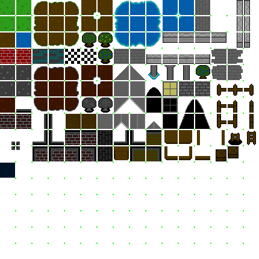
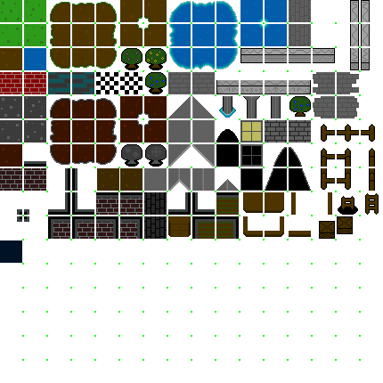

Game 1
The world has fallen into complete disarray. The forests and fields have been converted into metal wastelands. An iron fist of a ruler has taken control of most of the land and plans to continue this corruption of the natural world. It is up to you, a simple robot lassie with light projections as arms, to take down this evil overlord. You will have to learn how to reuse your abilities throughout your adventure due to the blank slate of a memory log that you find yourself with. Discover your past and save the world in “game’s title”.
Tips and tricks
Pay attention to the shadows of objects. If an object does not have a shadow, there’s a good chance that it’s simply a projection and you can walk through them to discover hidden passages and helpful items along the way.
Don’t forget that you can still use your combat abilities outside of battle. It will help you access areas that were previously unavailable with your earlier set of skills.
Dying too many times on a boss, our advice is, “Get Good”.
Don’t forget to get stocked up with healing items before fighting.
The robotic spider finds it hard to walk around without legs.
Going into a boss battle under leveled isn’t a wise idea.
Don’t be afraid to use items in battle. You can always find more afterwards.
Gallery
.png) 

.png)